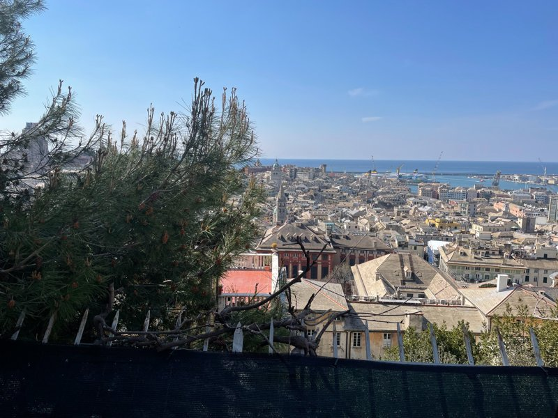
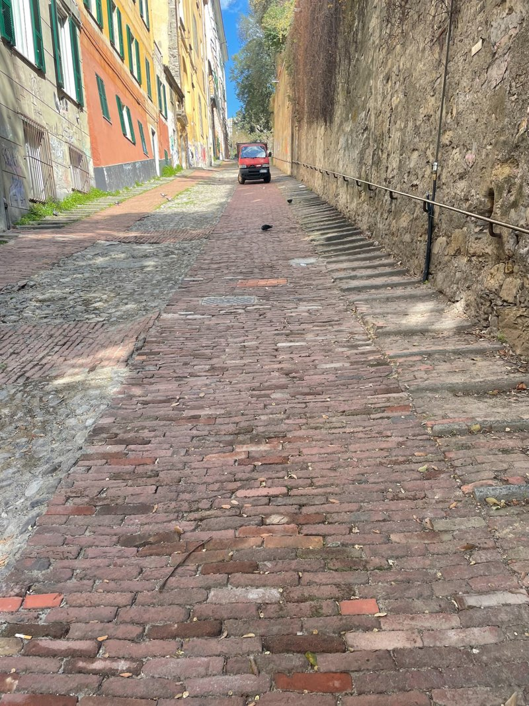
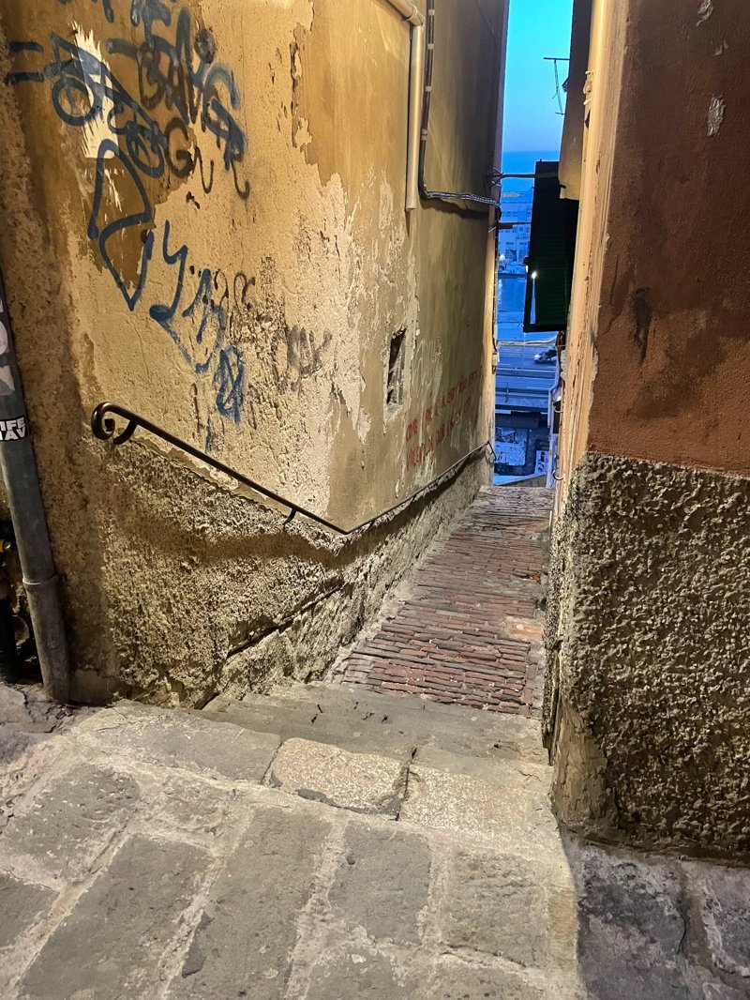
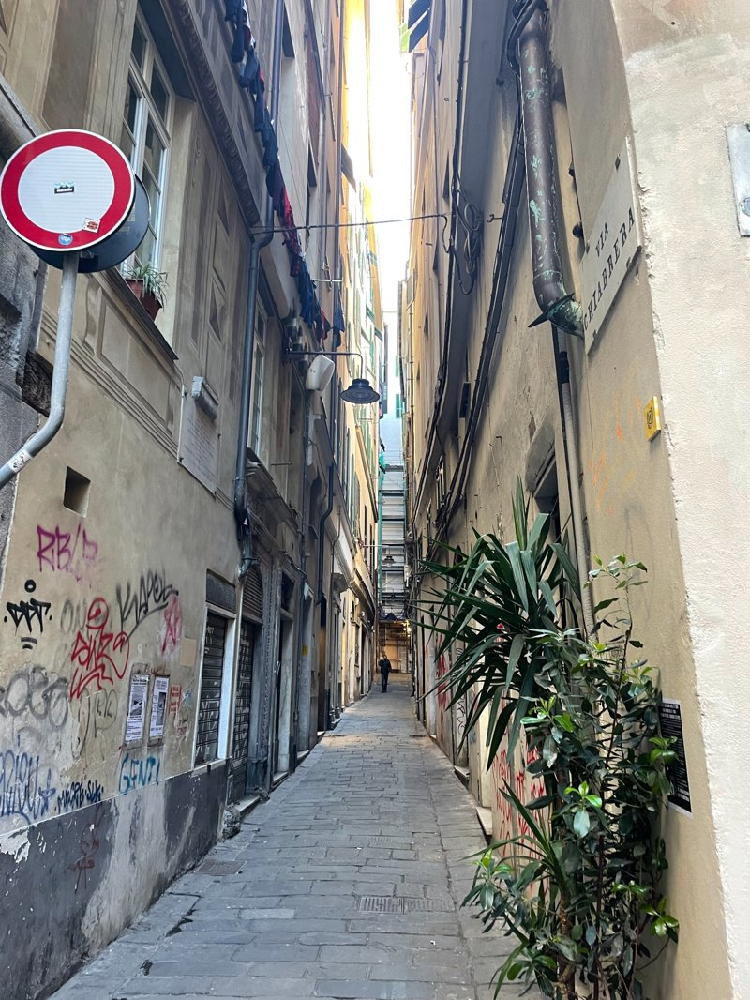

Als ik opnieuw naar Genua zou gaan, of deze stad voor het eerst zou bezoeken, dan zou ik vooral de tijd nemen om de stad rustig te ontdekken. Genua is een stad met veel smalle straatjes en een rijke geschiedenis die je overal terugziet.
Ik zou beginnen bij de haven, omdat dit een belangrijk deel van de stad is. Daarna zou ik de oude binnenstad in lopen en door de straatjes dwalen. Juist het rondlopen zonder plan maakt Genua zo bijzonder.
Ook zou ik zeker een kerk bezoeken en de pleinen ontdekken. De stad heeft veel mooie plekken die je pas ziet als je er echt doorheen loopt.
Ik vind Genua een van de mooiste steden van Italië.
Genua is een stad met ontzettend veel smalle straatjes. De geschiedenis van deze stad is rijk en indrukwekkend. Door de eeuwen heen groeide Genua uit tot een belangrijke handelsstad, wat nog altijd terug te zien is in de haven en de imposante gebouwen.

Zelf kwam ik hier aan in april 2023. Midden in de middag arriveerde ik bij mijn hostel. Daar werd mij aangeraden om de stad te ontdekken met een tip-based tour. Je betaalt dan geen vast bedrag vooraf, maar geeft achteraf een bedrag dat je zelf passend vindt.
Hier ontdekte ik mijn liefde voor deze manier van een stad verkennen.

De gids was één van de beste die ik tot nu toe heb gehad. Hij vertelde over het ontstaan van de stad, over de handel, over de minder mooie kanten van Genua en gaf tips over hoe je de stad het beste kunt beleven.
Natuurlijk hoorde daar ook eten bij: pizza, focaccia en gewoon lekker rondlopen door de stad.

Het mooiste wat je hier kunt doen, is eigenlijk dwalen. Gewoon zonder plan door de smalle straatjes lopen. Dat heb ik één keer gedaan — misschien iets te enthousiast.
Google Maps werkte namelijk nauwelijks, omdat de straatjes zo smal zijn en dicht op elkaar liggen dat je soms niet weet in welke steeg je precies staat. Maar uiteindelijk ben ik toch weer teruggekomen bij mijn hostel.
